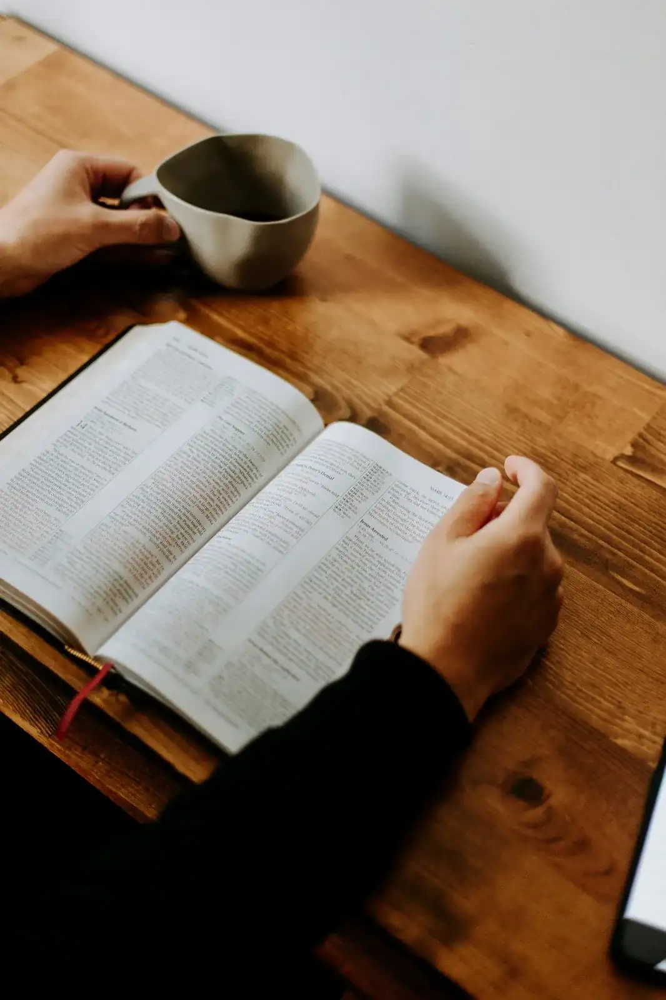

Czym jest Po Izraelsku?
Zajmujemy się różnymi tematami, które wszystkie związane są z naszą wiarą Jezusa Mesjasza, Biblią oraz Izraelem. Jesteśmy świadomi tego, jak ważny jest lud żydowski w planie Boga oraz wierzymy, że jako chrześcianie jesteśmy silnie związani z Izraelem.

Wspieramy Izrael
Nie chcemy milczeć wobec narastającego na świecie antysemityzmu. Wobec kłamstw podsycanych nienawiścią chcemy stawać po stronie prawdy i ukazywać miłość Bożą. Na platformach medialnych - Facebook i Instagram - publikujemy treści które mają na celu wykazywanie solidarności z ludem żydowskim. Tak jak jest napisane w księdze Izajasza: "Ze względu na Syjon nie będę milczał i ze względu na Jerozolimę nie będę cicho" pragniemy być głosem przeciw nienawiści i kłamstwom.

Biblia i język hebrajski
Zajmujemy się też nauką języka hebrajskiego - biblijnego oraz współczesnego. Fascynuje nasz czytanie Biblii w po hebrajsku. Kochamy oczywiście też czytać Pismo w ogóle, dla tego rozważamy w naszych wpisach różne biblijne tematy.